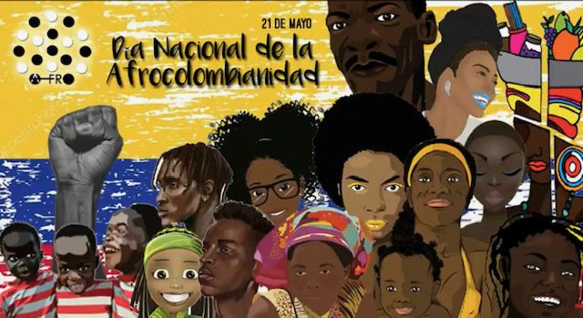
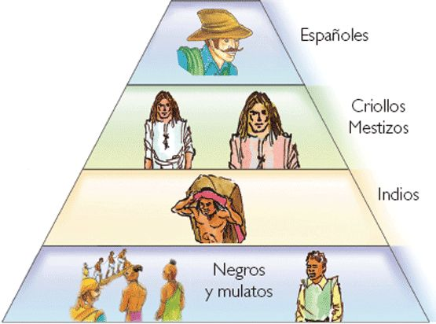
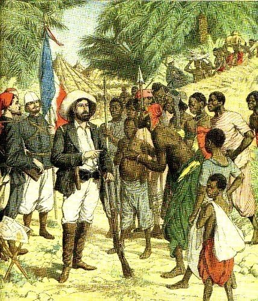
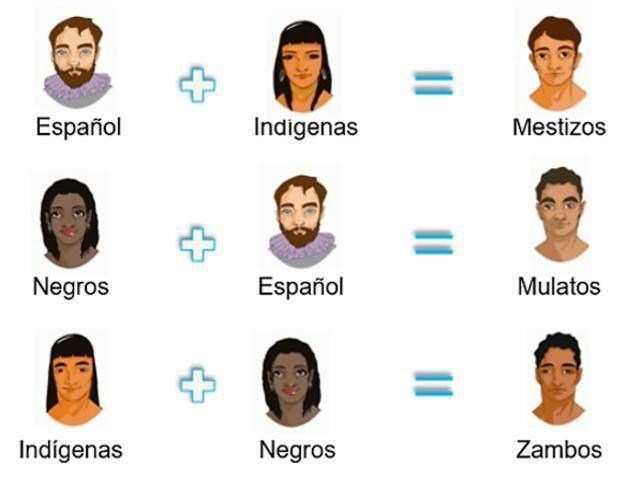
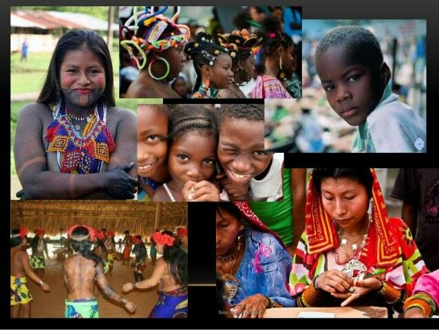
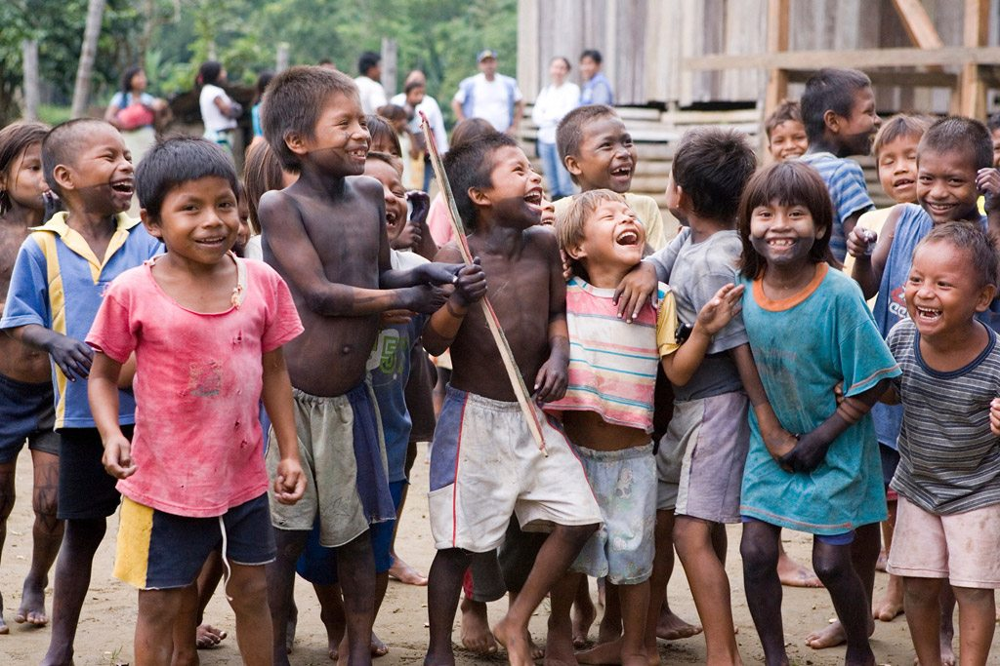
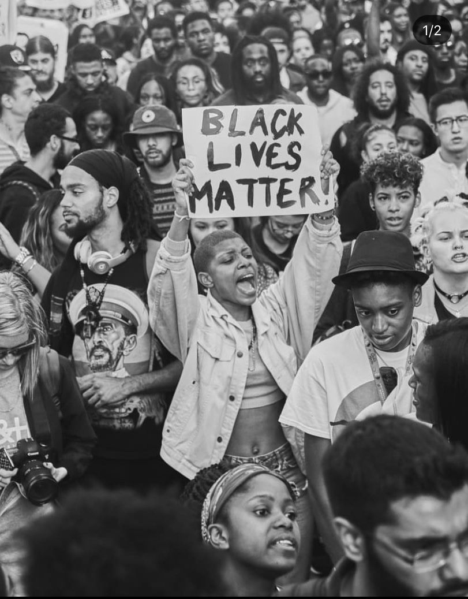
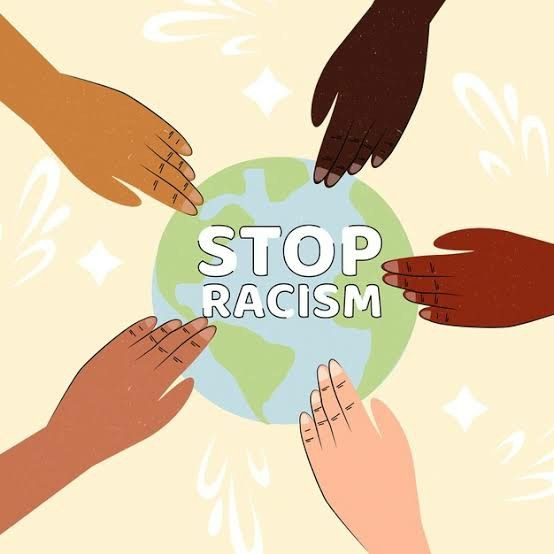

El racismo es un sistema de ideas, prácticas e instituciones que produce y reproduce desigualdades entre grupos humanos por motivos de aspecto físico (como el color de piel), origen étnico o cultural. Va más allá de la hostilidad individual: es una estructura que coloca a ciertos grupos en posiciones de poder y privilegio mientras margina a otros. El racismo puede manifestarse como discriminación directa, violencia, estereotipos, negación de derechos, invisibilización cultural y desequilibrio en el acceso a recursos y representación política.
En América Latina el racismo está entrelazado con la colonización europea, la esclavitud africana y el sometimiento de pueblos originarios; el resultado fue una jerarquía social racializada que endureció fronteras de acceso a la tierra, educación, representación y riqueza. Para leer un análisis detallado sobre el impacto en Colombia, revisa este artículo de la Ver más....
La colonización europea (siglos XV-XIX) impuso una clasificación social basada en procedencia y color; los colonizadores se colocaron en la cúspide, mientras que indígenas y personas traídas como esclavas desde África quedaron subordinadas. Este orden fue legitimado por leyes, prácticas económicas y visiones culturales que justificaron la explotación.
La trata transatlántica de esclavos trajo millones de africanos a América. Fueron forzados a trabajar en plantaciones, minas y otras labores. Tras la abolición, las sociedades no compensaron la exclusión estructural: falta de acceso a tierra y educación generó desventajas intergeneracionales.
El ideal del mestizaje —promovido en muchos países— a veces sirvió para invisibilizar la especificidad de pueblos afro e indígenas, diluyendo demandas específicas de reconocimiento y derechos en un relato nacional homogéneo.
Resumen: El racismo en Colombia es producto de procesos históricos (colonización, esclavitud, segregación territorial), transformaciones políticas y económicas (república, café, minería), y conflictos armados que afectaron con especial severidad a poblaciones afrodescendientes e indígenas. A continuación se presenta un recorrido por etapas históricas con referencias y recursos visuales.
Muchas comunidades afrodescendientes habitan el Pacífico y la región Caribe, territorios con poca inversión estatal y altos índices de pobreza. La falta de titulación de tierras y la presión extractiva (minería, cultivo) genera conflictos y desplazamiento.
Las brechas en acceso a educación de calidad y servicios de salud persisten. La representación política de afrodescendientes es insuficiente comparado con su peso demográfico en algunas regiones.
Pastor y líder del movimiento por los derechos civiles en EE. UU., conocido por su discurso “I Have a Dream”. Promovió la resistencia pacífica contra la segregación y discriminación.
Líder sudafricano que pasó 27 años en prisión y encabezó la lucha contra el apartheid. Fue el primer presidente negro de Sudáfrica y símbolo mundial de reconciliación y justicia social.
Su asesinato en 2020 a manos de la policía en EE. UU. desató protestas globales bajo el movimiento Black Lives Matter. Su caso simboliza la violencia policial y la urgencia de reformas.
Activista afroamericana que en 1955 desafió la segregación racial al negarse a ceder su asiento en un bus de Montgomery. Su acción impulsó el movimiento por los derechos civiles en EE. UU.
Datos de discriminación y racismo en América Latina según informes de organismos internacionales:
| País | % Población Afro/Indígena | % Afectados por discriminación racial |
|---|---|---|
| Brasil | 50% | 64% |
| México | 25% | 40% |
| Colombia | 20% | 55% |
| Argentina | 3% | 15% |
| Perú | 30% | 48% |
| Chile | 10% | 28% |
En América Latina, las poblaciones afrodescendientes e indígenas continúan enfrentando desigualdades en acceso a educación, empleo, servicios básicos y participación política. Movimientos sociales han logrado avances normativos, pero la implementación sigue siendo limitada. En países como Brasil, Colombia y México, el racismo estructural persiste como obstáculo al desarrollo inclusivo.
El racismo en Colombia tiene raíces coloniales, con la esclavitud africana y la subordinación de pueblos indígenas. Tras la abolición en 1851, comunidades afrodescendientes continuaron en desventaja socioeconómica, sin acceso pleno a tierra, educación ni representación política. Durante el conflicto armado, muchas comunidades afro fueron víctimas de desplazamiento y violencia.
